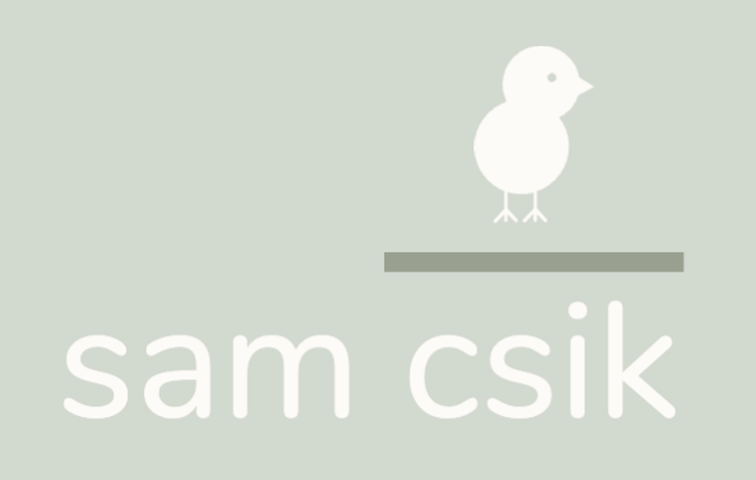

about
~ a bit more about me outside of my job ~
the hobby
I feel very fortunate to be doing so many of things that I love a lot right now. That includes my job, but also spending lots of time outdoors. Living in Santa Barbara is a massive privilege and being here means that we have access to both the mountains and the sea, each a few minutes in either direction. It was the ocean that brought me here originally, but most of my free time is now spent on the trails.
I started recording my hikes (and eventually some other activities) on Strava in late 2020 and finally got around to retrieving my activity data using the {rStrava} package. Below is a heatmap of all my recorded activities made using leaflet. It’s challenging to see individual markers at my most frequented trail heads/starting points, so I’ve recently began building out my own Strava Dashboard (using {shinydashboard}) to make it a bit more interactive and filterable – it’s a work in progress, but a fun side project that I’m excited to continue iterating upon. Huge shout out to Daniel Cullen (who also happens to be a Santa Barbara resident!) for his awesome blogpost that got me started with my own map.
Feel free to check out my Strava dashboard, Sam’s Strava Stats (still working on a better name…)! Source code available on GitHub.
the logo
I’m a proud Csik (pronounced “chick” – Hungarian, for the curious), though I spent many of my younger years embarrassed when people (understandably) got it wrong (variations include “sea-sick,” “sick,” “ca-sick,” to name a few) – and many of us know how brutal little kid peers can be when there’s a funny way to mispronounce a name. At some point, I learned to embrace the weird and it became very much a part of my everyday identity. My track coaches and teammates would shout “LET’S GO CSIK” during my events at meets, I signed year books as “Sam [drawing of a chick]” and every handmade card received my “The Csik Press” identifying mark on the back. As I’ve grown older, I’ve taken more care to help colleagues, peers, and strangers learn the correct pronunciation – because if I’m being totally honest, I think my name is pretty darn cool . So my first ever real logo is an homage to my earliest attempts at claiming my Csik identity. It may evolve a bit, but for now, it makes me pretty happy. Made using the (free!) Adobe Express logo maker.

